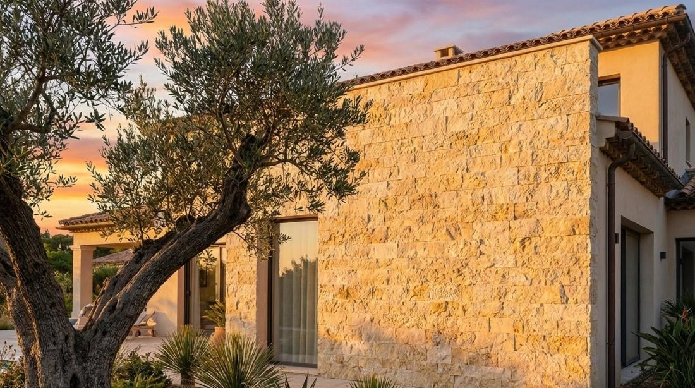
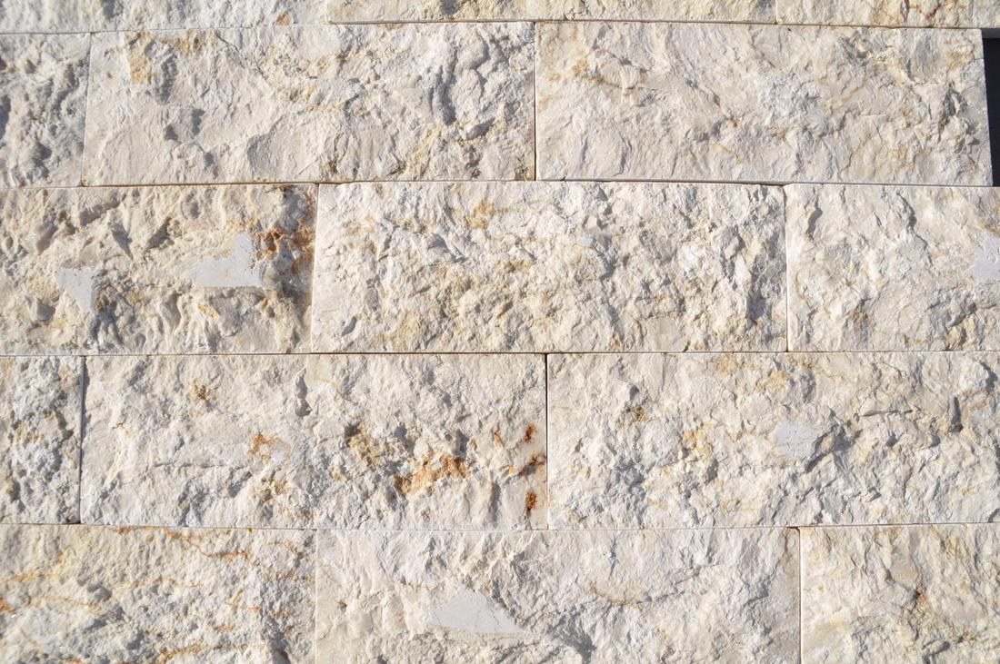
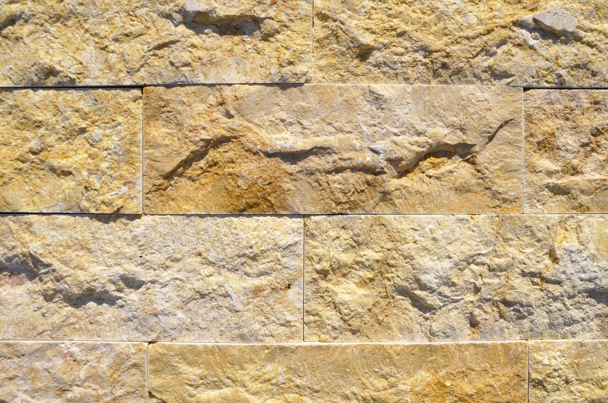
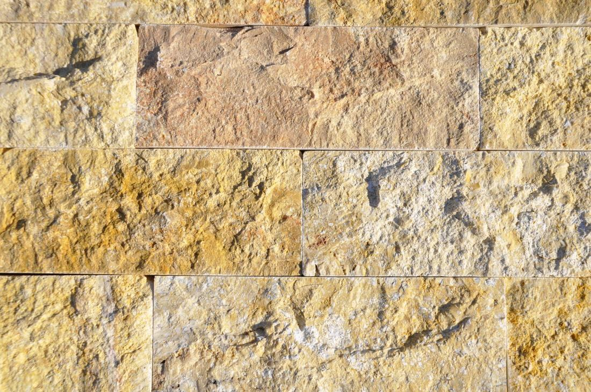
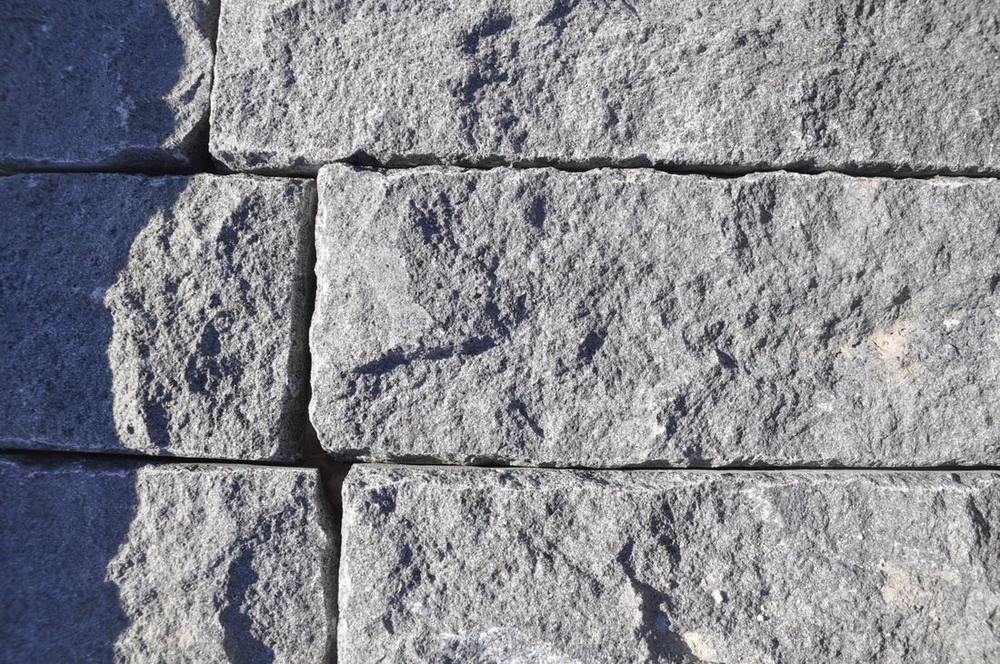

Απεικόνιση · πρόσοψη βίλας
Φινίρισμα, όχι πέτρα
Σχιστή όψη
Πέτρα σχισμένη κατά μήκος των φυσικών της νερών με υδραυλικό σχίστη. Η όψη είναι τραχιά, οι ακμές ίσιες και τα κομμάτια στοιβάζονται τακτικά σε σειρές. Οι περισσότερες πέτρες της γκάμας σχίζονται, όπως οι Sunny Menia, Sinai Pearl και ο βασάλτης.




Διάθεση
Μορφή
Λωρίδες, πριονιστή πλάτη και ακμές, συσκευασμένες ανά m²
Διαστάσεις
10 × 30 · 15 × 30 · 20 × 40 cm · άλλες κατόπιν αιτήματος
Πάχος
1 – 2 cm, χωρίς το ανάγλυφο
Στερέωση
Τσιμεντοειδής κόλλα κατηγορίας C2, ανοιχτοί ή κλειστοί αρμοί
Πέτρες
Sugar, Light Yellow, Dark Yellow, βασάλτης και οι περισσότερες πέτρες της γκάμας
Καλό να γνωρίζετε
Η σχιστή όψη είναι φυσική θραύση, όχι πριονιστό φινίρισμα: το βάθος του ανάγλυφου διαφέρει ανά κομμάτι και είναι μέρος του υλικού. Παραγγείλετε 5 % επιπλέον για κοπές γύρω από ανοίγματα. Φωτίστε την πλάγια για να αναδειχθεί η υφή.
Τεχνικά στοιχεία
Σχιστή όψη
Σχίζεται με μηχανή. Πιο επίπεδη και κανονική, με ίσιες ακμές, τοποθετείται σε σειρές
Όψη βράχου
Δουλεμένη στο χέρι. Βαθύτερο ανάγλυφο και ακανόνιστες ακμές, τοποθετείται ακανόνιστα
Για κομμάτια με φυσική όψη βράχου, δείτε τις σελίδες της ακανόνιστης επένδυσης.
Βασάλτης σχιστής όψης
Φυσική Πέτρα